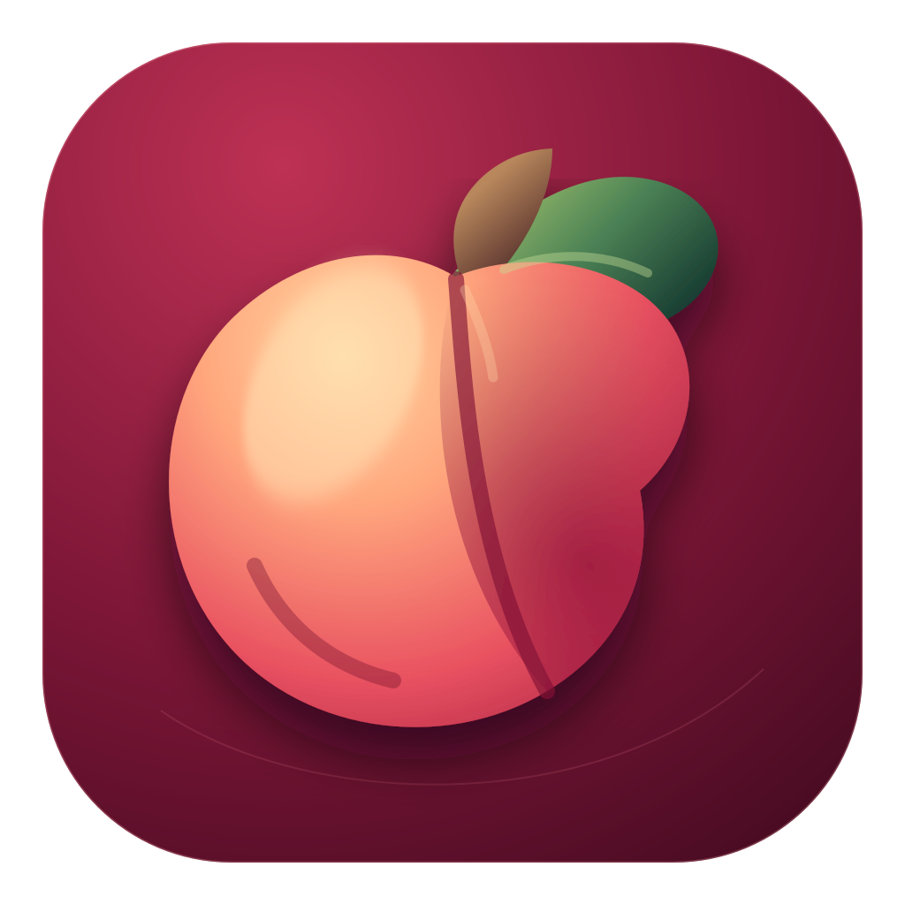

HBRS
Alma-Mater-Bezug als akademisches Fundament in der Region Bonn-Rhein-Sieg.
Bonn · Europa · verantwortungsvoll

KI, die für Menschen arbeitet – mit europäischen Werten, nachvollziehbarer Wirkung und einem Blick auf Energie- und Wasserverbrauch.
01 — Ausgangspunkt
Rendert verbindet kreative Technologie, sichere Produktentwicklung und europäische Wertvorstellungen. Der Hauptsitz ist in Bonn gedacht: nah an Wissenschaft, öffentlichem Diskurs und digitaler Infrastruktur.
02 — Unser USP
03 — Herkunft & Netzwerk
Alma-Mater-Bezug als akademisches Fundament in der Region Bonn-Rhein-Sieg.
Projektspur für digitale Medien, Interaktion und zugängliche Erlebnisse.
Netzwerkbezug an der Schnittstelle von Kultur, Community und unabhängiger Produktion.
Projektspuren für kreative Werkzeuge und gemeinschaftliche Wissensräume.
Projektbezüge; Status, Rechte und Verfügbarkeit werden vor Veröffentlichung verifiziert.
04 — Produktprinzip
rendert.de wird der verständliche Einstiegspunkt: Produkt, Wissen, Community und – erst nach rechtlicher und technischer Freigabe – Zahlungen.
05 — Einladung
Rendert macht verantwortliche Technologie konkret: kreativ, effizient und vertrauenswürdig.
Gespräch beginnenKein behauptetes Sponsoring: BSI, Telekom, Apple, Meta, Alphabet, Tesla sowie genannte Personen sind keine bestätigten Partner oder Unterstützer von Rendert.